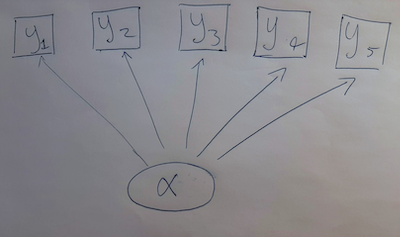
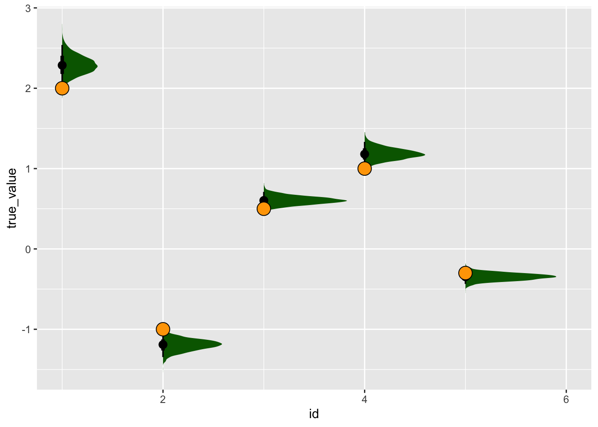
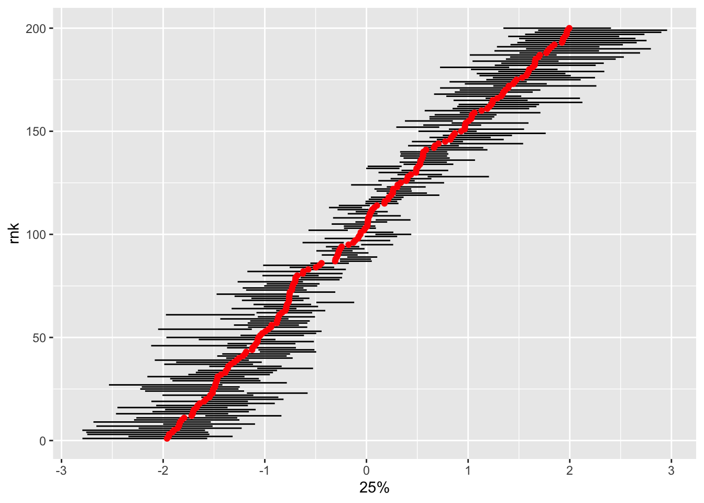

library(targets)
library(ggplot2)
library(tidyverse)
library(tidybayes)
library(cmdstanr)Imagine we have many measurments, all correlated with each other. Where do these correlations come from? One possibility is that all these measurents are caused by the values of some unobservable, latent trait. This happens in ecology when we imagine that, for example, the Competitive Ability of a species appears to us in the form of measurable traits that (to us) seem to represent this trait: leaf size, growth rate, alleopathy, etc.

In mathematics, this model is the following:
$$
\[\begin{align} Y_{ij} &\sim \text{Normal}(\mu_{ij}, \sigma) \\ \mu_{ij} &= \alpha_i \times \beta_j\\ \boldsymbol{ \alpha } &\sim \text{Normal}(0, 1) \\ \boldsymbol{ \beta } &\sim \text{Normal}(0, 1) \\ \end{align}\]
$$
set.seed(1234)
alpha <- runif(200, min = -2, max = 2)
five_betas <- c(2,-1, .5, 1, -.3)
sigma_obs <- .6
ymean <- alpha %o% five_betas
## sample a random number for each of these and put in back
ind <- which(ymean != 0, arr.ind = TRUE)
yobs <- matrix(rep(0L, times = 200*5), nrow = 200, ncol = 5)
yobs[ind] <- rnorm(n = 200*5, mean = ymean[ind], sd = sigma_obs)
Warning
My toxic trait is that I like for-loops but never write them
pairs(yobs)A first, simple stan model
For a first attempt, I’ll try a model that encodes the generative process above, coded in Stan:
latent_continuous <- cmdstan_model(
stan_file = here::here("posts/2023-03-20-latent-continuous/latent_continuous.stan"))
latent_continuous
data {
int<lower=0> N;
matrix[N, 5] y;
}
parameters {
row_vector[5] beta;
real<lower=0> sigma;
vector[N] alpha;
}
model {
// take the outer product: alpha multiplied by each beta in turn
matrix[N, 5] mu = alpha * beta;
for (i in 1:N){
y[i] ~ normal(mu[i], sigma);
}
beta ~ std_normal();
sigma ~ exponential(1);
alpha ~ std_normal();
}datalist <- list(N = nrow(yobs),
y = yobs)
latent_cont_samp <- latent_continuous$sample(
data = datalist, parallel_chains = 4, refresh = 0)Running MCMC with 4 parallel chains...Chain 3 Informational Message: The current Metropolis proposal is about to be rejected because of the following issue:Chain 3 Exception: normal_lpdf: Scale parameter is 0, but must be positive! (in '/var/folders/x7/l08zn2396g797m5ws54np_6w0000gp/T/RtmpDw2oa1/model-566f1bdf5dc6.stan', line 15, column 4 to column 32)Chain 3 If this warning occurs sporadically, such as for highly constrained variable types like covariance matrices, then the sampler is fine,Chain 3 but if this warning occurs often then your model may be either severely ill-conditioned or misspecified.Chain 3 Chain 2 finished in 22.5 seconds.
Chain 1 finished in 22.9 seconds.
Chain 4 finished in 22.7 seconds.
Chain 3 finished in 22.9 seconds.
All 4 chains finished successfully.
Mean chain execution time: 22.7 seconds.
Total execution time: 23.1 seconds.latent_cont_samp variable mean median sd mad q5 q95 rhat ess_bulk ess_tail
lp__ -91.59 -91.33 14.44 14.43 -116.18 -68.55 1.01 639 1462
beta[1] -0.01 0.01 2.26 3.34 -2.41 2.40 1.74 6 280
beta[2] 0.01 0.00 1.18 1.74 -1.26 1.27 1.74 6 226
beta[3] 0.00 0.00 0.60 0.88 -0.67 0.66 1.74 6 125
beta[4] 0.00 0.01 1.17 1.72 -1.26 1.26 1.74 6 170
beta[5] 0.00 0.00 0.34 0.50 -0.40 0.40 1.74 6 105
sigma 0.60 0.60 0.01 0.01 0.57 0.62 1.00 5143 2824
alpha[1] 0.00 -0.07 1.06 1.54 -1.31 1.31 1.73 6 149
alpha[2] 0.00 -0.03 0.53 0.72 -0.73 0.76 1.73 6 137
alpha[3] 0.00 -0.01 0.48 0.66 -0.70 0.71 1.73 6 122
# showing 10 of 207 rows (change via 'max_rows' argument or 'cmdstanr_max_rows' option)that was.. a spectacular failure! I suspect this is because the parameters are not identifiable: there’s no way to know, from the model’s perspective, if a particular trait is in a positive or negative relationship to the latent state. What if I try constraining these?
Partially constrained model
In this model I set constraints on the sign of the coefficients that relate the latent state to any observed variable. This is the sort of thing that would work in most ecological systems. For example, if an underlying state is “competitive ability” we might know it relates positively to traits like growth rate and leaf size, etc.
latent_cont_constrained <- cmdstan_model(
stan_file = here::here(
"posts/2023-03-20-latent-continuous/latent_cont_constrained.stan"))
latent_cont_constrained
data {
int<lower=0> N;
matrix[N, 5] y;
}
parameters {
row_vector[5] beta;
real<lower=0> sigma;
vector[N] alpha;
}
transformed parameters {
row_vector[5] betatrans;
betatrans[1] = exp(beta[1]);
betatrans[2] = -exp(beta[2]);
betatrans[3] = exp(beta[3]);
betatrans[4] = exp(beta[4]);
betatrans[5] = -exp(beta[5]);
}
model {
// take the outer product: alpha multiplied by each beta in turn
matrix[N, 5] mu = alpha * betatrans;
for (i in 1:N){
y[i] ~ normal(mu[i], sigma);
}
beta ~ std_normal();
sigma ~ exponential(1);
alpha ~ std_normal();
}latent_cont_constrained_samp <- latent_cont_constrained$sample(
data = datalist, parallel_chains = 4, refresh = 0)Running MCMC with 4 parallel chains...Chain 1 Informational Message: The current Metropolis proposal is about to be rejected because of the following issue:Chain 1 Exception: normal_lpdf: Location parameter[1] is inf, but must be finite! (in '/var/folders/x7/l08zn2396g797m5ws54np_6w0000gp/T/Rtmpi4HWQ5/model-72c943da0867.stan', line 23, column 4 to column 32)Chain 1 If this warning occurs sporadically, such as for highly constrained variable types like covariance matrices, then the sampler is fine,Chain 1 but if this warning occurs often then your model may be either severely ill-conditioned or misspecified.Chain 1 Chain 3 Informational Message: The current Metropolis proposal is about to be rejected because of the following issue:Chain 3 Exception: normal_lpdf: Scale parameter is 0, but must be positive! (in '/var/folders/x7/l08zn2396g797m5ws54np_6w0000gp/T/Rtmpi4HWQ5/model-72c943da0867.stan', line 23, column 4 to column 32)Chain 3 If this warning occurs sporadically, such as for highly constrained variable types like covariance matrices, then the sampler is fine,Chain 3 but if this warning occurs often then your model may be either severely ill-conditioned or misspecified.Chain 3 Chain 2 finished in 12.0 seconds.
Chain 3 finished in 12.2 seconds.
Chain 1 finished in 12.3 seconds.
Chain 4 finished in 12.3 seconds.
All 4 chains finished successfully.
Mean chain execution time: 12.2 seconds.
Total execution time: 12.4 seconds.latent_cont_constrained_samp variable mean median sd mad q5 q95 rhat ess_bulk ess_tail
lp__ -84.70 -84.05 15.31 15.23 -110.27 -60.68 1.00 618 960
beta[1] 0.83 0.83 0.05 0.05 0.74 0.91 1.00 526 968
beta[2] 0.18 0.17 0.06 0.06 0.08 0.28 1.00 667 1292
beta[3] -0.51 -0.51 0.09 0.09 -0.66 -0.37 1.00 1385 2103
beta[4] 0.17 0.17 0.06 0.06 0.06 0.27 1.00 648 1108
beta[5] -1.07 -1.06 0.13 0.13 -1.30 -0.87 1.00 2402 1938
sigma 0.60 0.60 0.02 0.01 0.57 0.62 1.00 5000 2966
alpha[1] -1.03 -1.02 0.21 0.22 -1.37 -0.69 1.00 5037 2288
alpha[2] 0.48 0.48 0.21 0.21 0.14 0.83 1.00 8091 2531
alpha[3] 0.43 0.43 0.20 0.20 0.09 0.77 1.00 8381 2650
# showing 10 of 212 rows (change via 'max_rows' argument or 'cmdstanr_max_rows' option)# tidybayes::get_variables(latent_cont_constrained_samp)
tidybayes::gather_rvars(latent_cont_constrained_samp, betatrans[id]) |>
mutate(true_value = five_betas) |>
ggplot(aes(x = id, dist = .value)) +
tidybayes::stat_halfeye(fill = "darkgreen") +
geom_point(aes(x = id, y = true_value), pch = 21, fill = "orange", size = 5)Warning: Using the `size` aesthetic with geom_segment was deprecated in ggplot2 3.4.0.
ℹ Please use the `linewidth` aesthetic instead.
So it seems that with some simple constraints on the signs, this model samples just fine!
Does it also get the latent states right?
tidybayes::summarise_draws(latent_cont_constrained_samp, quantile) |>
filter(stringr::str_detect(variable, "alpha")) |>
bind_cols(true_alpha = alpha) |>
mutate(id = readr::parse_number(variable),
rnk = dense_rank(true_alpha)) |>
ggplot(aes(x = `25%`, xend = `75%`, y = rnk, yend = rnk)) +
geom_segment() +
geom_point(aes(x = true_alpha, y = rnk), inherit.aes = FALSE, col = "red")What if we experiment with a standard deviation for the alpha (ie a hierarchical model)
latent_cont_constr_hier <- cmdstan_model(
stan_file = here::here("posts/2023-03-20-latent-continuous/latent_cont_constr_hier.stan"))
latent_cont_constr_hier
data {
int<lower=0> N;
matrix[N, 5] y;
}
parameters {
row_vector[5] beta;
real<lower=0> sigma;
vector[N] alpha;
real<lower=0> s_alpha;
}
transformed parameters {
row_vector[5] betatrans;
betatrans[1] = exp(beta[1]);
betatrans[2] = -exp(beta[2]);
betatrans[3] = exp(beta[3]);
betatrans[4] = exp(beta[4]);
betatrans[5] = -exp(beta[5]);
}
model {
// take the outer product: alpha multiplied by each beta in turn
matrix[N, 5] mu = alpha * betatrans;
for (i in 1:N){
y[i] ~ normal(mu[i], sigma);
}
beta ~ std_normal();
sigma ~ exponential(1);
alpha ~ normal(0, s_alpha);
s_alpha ~ exponential(.1);
}latent_cont_constr_hier_samp <- latent_cont_constr_hier$sample(
data = datalist, parallel_chains = 4, refresh = 0)Running MCMC with 4 parallel chains...Chain 1 Informational Message: The current Metropolis proposal is about to be rejected because of the following issue:Chain 1 Exception: normal_lpdf: Scale parameter is 0, but must be positive! (in '/var/folders/x7/l08zn2396g797m5ws54np_6w0000gp/T/Rtmpi4HWQ5/model-72c940a3b623.stan', line 24, column 4 to column 32)Chain 1 If this warning occurs sporadically, such as for highly constrained variable types like covariance matrices, then the sampler is fine,Chain 1 but if this warning occurs often then your model may be either severely ill-conditioned or misspecified.Chain 1 Chain 2 Informational Message: The current Metropolis proposal is about to be rejected because of the following issue:Chain 2 Exception: normal_lpdf: Scale parameter is 0, but must be positive! (in '/var/folders/x7/l08zn2396g797m5ws54np_6w0000gp/T/Rtmpi4HWQ5/model-72c940a3b623.stan', line 28, column 2 to column 29)Chain 2 If this warning occurs sporadically, such as for highly constrained variable types like covariance matrices, then the sampler is fine,Chain 2 but if this warning occurs often then your model may be either severely ill-conditioned or misspecified.Chain 2 Chain 3 Informational Message: The current Metropolis proposal is about to be rejected because of the following issue:Chain 3 Exception: normal_lpdf: Scale parameter is 0, but must be positive! (in '/var/folders/x7/l08zn2396g797m5ws54np_6w0000gp/T/Rtmpi4HWQ5/model-72c940a3b623.stan', line 28, column 2 to column 29)Chain 3 If this warning occurs sporadically, such as for highly constrained variable types like covariance matrices, then the sampler is fine,Chain 3 but if this warning occurs often then your model may be either severely ill-conditioned or misspecified.Chain 3 Chain 4 Informational Message: The current Metropolis proposal is about to be rejected because of the following issue:Chain 4 Exception: normal_lpdf: Scale parameter is 0, but must be positive! (in '/var/folders/x7/l08zn2396g797m5ws54np_6w0000gp/T/Rtmpi4HWQ5/model-72c940a3b623.stan', line 28, column 2 to column 29)Chain 4 If this warning occurs sporadically, such as for highly constrained variable types like covariance matrices, then the sampler is fine,Chain 4 but if this warning occurs often then your model may be either severely ill-conditioned or misspecified.Chain 4 Chain 3 finished in 20.9 seconds.
Chain 4 finished in 23.3 seconds.
Chain 1 finished in 23.9 seconds.
Chain 2 finished in 25.6 seconds.
All 4 chains finished successfully.
Mean chain execution time: 23.4 seconds.
Total execution time: 25.7 seconds.Warning: 4 of 4 chains had an E-BFMI less than 0.2.
See https://mc-stan.org/misc/warnings for details.tidybayes::summarise_draws(latent_cont_constr_hier_samp, quantile) |>
filter(stringr::str_detect(variable, "alpha\\[")) |>
bind_cols(true_alpha = alpha) |>
mutate(id = readr::parse_number(variable),
rnk = dense_rank(true_alpha)) |>
ggplot(aes(x = `25%`, xend = `75%`, y = rnk, yend = rnk)) +
geom_segment() +
geom_point(aes(x = true_alpha, y = rnk), inherit.aes = FALSE, col = "red")